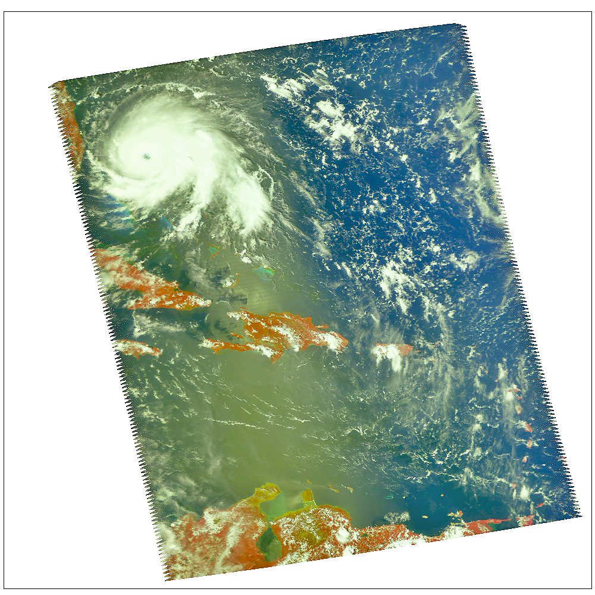
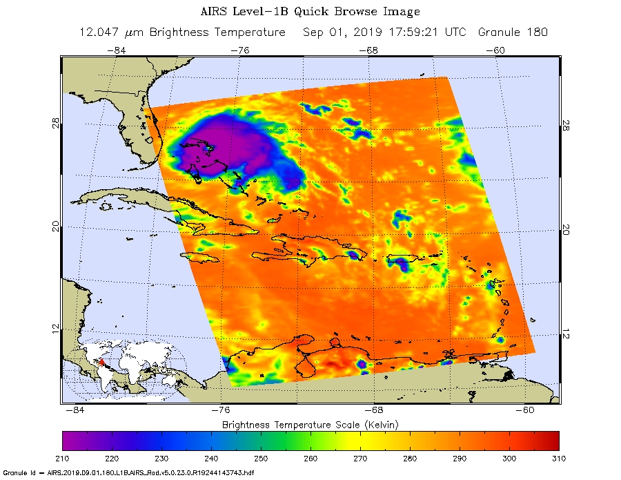

How Climate Change May Be Impacting Storms Over Earth's Tropical Oceans?
Rising global temperatures could be causing tropical storms to slow down, allowing them more time to unleash heavy rainfall once making landfall, a new study suggests.
A “notable example” of this effect was seen during Hurricane Harvey, which “stalled” over Houston, releasing 100cm of rain in just three days, the study author tells Carbon Brief.
Although the new study finds a link between temperature rise and storm slowdown, it is possible that natural climate variability has also played a role in the downturn, the author adds.
However, the new analysis does not consider a range of factors affecting the forward speed of tropical storms, including the time of year and local weather conditions, another scientist tells Carbon Brief.
Are Supercharged Atlantic Hurricane Seasons a Case in Point?
Take hurricanes, for example. A hot topic in extreme weather research is how climate change is impacting the strength of tropical cyclones. A look at the 2019 Atlantic hurricane season provides a case in point.
After a quiet start to the 2019 season, Hurricane Dorian roared through the Atlantic in late August and early September, surprising many forecasters with its unexpected and rapid intensification. In just five days, Dorian grew from a minimal Category 1 hurricane to a Category 5 behemoth, reaching a peak intensity of 185 miles (295 kilometers) per hour when it made landfall in The Bahamas. In the process, Dorian tied an 84-year-old record for strongest landfalling Atlantic hurricane and became the fifth most intense recorded Atlantic hurricane to make landfall, as measured by its barometric pressure.
Hurricane Dorian as seen by the four visible/near-infrared channels of the Atmospheric Infrared Sounder (AIRS) instrument aboard NASA's Aqua satellite at 2 p.m. EDT (11 a.m. PDT) on Sept. 1, 2019, as the storm made landfall in The Bahamas. At the time of landfall, Dorian had reached its peak intensity of 185 miles (295 kilometers) per hour, tying an 84-year-old record for strongest landfalling Atlantic hurricane. Credit: NASA/JPL-Caltech

A false-color infrared image of Hurricane Dorian, as seen by the Atmospheric Infrared Sounder (AIRS) instrument aboard NASA's Aqua satellite at 2 p.m. EDT (11 a.m. PDT) on Sept. 1, 2019. Hurricanes are large collections of severe, deep thunderstorms. Purple shades denote the coldest cloud top temperatures and most severe convective activity. Blues and greens show warmer areas with less rain clouds, while oranges and reds represent mostly cloud-free air. Each square pixel represents the measurements from a 10-by-10-mile (16-by-16-kilometer) area. Credit: NASA/JPL-Caltech
Two weeks later the remnants of Tropical Storm Imelda swamped parts of Texas under more than 40 inches (102 centimeters) of rain, enough to make it the fifth wettest recorded tropical cyclone to strike the lower 48 states. Fueled by copious moisture from a warm Gulf of Mexico, the slow-moving Imelda’s torrential rains and flooding wreaked havoc over a wide region.
Then in late September, Hurricane Lorenzo became the most northerly and easterly Category 5 storm on record in the Atlantic, even affecting the British Isles as an extratropical cyclone.
Earth’s atmosphere and oceans have warmed significantly in recent decades. A warming ocean creates a perfect cauldron for brewing tempests. Hurricanes are fueled by heat in the top layers of the ocean and require sea surface temperatures (SSTs) greater than 79 degrees Fahrenheit (26 degrees Celsius) to form and thrive.
Since 1995 there have been 17 above-normal Atlantic hurricane seasons, as measured by NOAA’s Accumulated Cyclone Energy (ACE) Index. ACE calculates the intensity of a hurricane season by combining the number, wind speed and duration of each tropical cyclone. That’s the largest stretch of above-normal seasons on record.
So while there aren’t necessarily more Atlantic hurricanes than before, those that form appear to be getting stronger, with more Category 4 and 5 events.
Warming seas may increase frequency of extreme storms
A new NASA study shows that warming of the tropical oceans due to climate change could lead to a substantial increase in the frequency of extreme rain storms by the end of the century.
The study team, led by Hartmut Aumann of NASA's Jet Propulsion Laboratory in Pasadena, California, combed through 15 years of data acquired by NASA's Atmospheric Infrared Sounder (AIRS) instrument over the tropical oceans to determine the relationship between the average sea surface temperature and the onset of severe storms.
They found that extreme storms - those producing at least 0.12 inches (3 millimeters) of rain per hour over a 16-mile (25-kilometer) area - formed when the sea surface temperature was higher than about 82 degrees Fahrenheit (28 degrees Celsius). They also found that, based on the data, 21 percent more storms form for every 1.8 degrees Fahrenheit (1 degree Celsius) that ocean surface temperatures rise.
"It is somewhat common sense that severe storms will increase in a warmer environment. Thunderstorms typically occur in the warmest season of the year," Aumann explained. "But our data provide the first quantitative estimate of how much they are likely to increase, at least for the tropical oceans."
Currently accepted climate models project that with a steady increase of carbon dioxide in the atmosphere (1 percent per year), tropical ocean surface temperatures may rise by as much as 4.8 degrees Fahrenheit (2.7 degrees Celsius) by the end of the century. The study team concludes that if this were to happen, we could expect the frequency of extreme storms to increase by as much as 60 percent by that time.
Although climate models aren't perfect, results like these can serve as a guideline for those looking to prepare for the potential effects a changing climate may have.
"Our results quantify and give a more visual meaning to the consequences of the predicted warming of the oceans," Aumann said. "More storms mean more flooding, more structure damage, more crop damage and so on, unless mitigating measures are implemented."
The peer-reviewed study was published in the December 2018 issue of the Geophysical Research Letters journal.